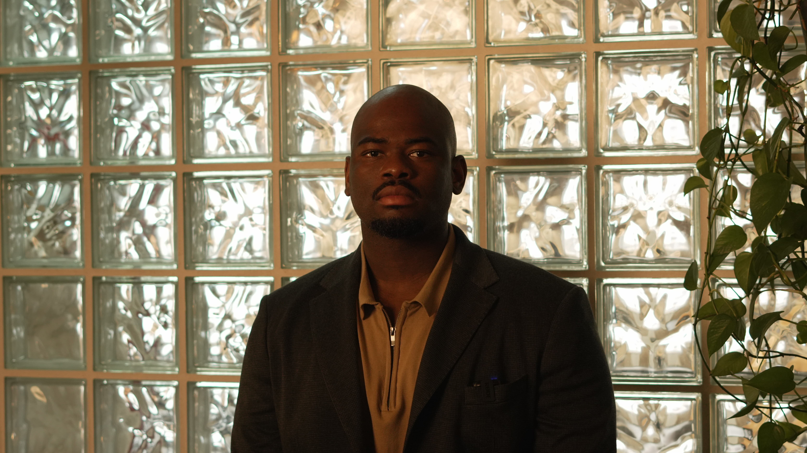

I am deeply curious about the African continent — studying how external forces have shaped our development over the years, and how internal structures currently limit it. I express my thoughts through essays, manifestos, research, and articles.

Infrastructure is never abstract. It is a living system — one that should adapt to and enable the basic functions of our lives. That conviction grew out of an unlikely path: I trained as a medical doctor in Nigeria and Ukraine, completed a Master of Public Health at the National University of Kyiv-Mohyla Academy, and somewhere along the way realised that the infrastructure question was the same as the health question. Both are about whether systems function for the people inside them.
That background shapes everything I write and build. My time in clinical and public health settings made clear to me that outcomes are determined not only by expertise, but by whether the surrounding systems hold. The clinic, the supply chain, the power connection — infrastructure is never a background condition. It is the condition.
I am the founder of Langovest, a company working to accelerate infrastructure development in Africa through diaspora investment, and InfraMobile, which focuses on modular and mobile technology that enables basic human needs — clinics that move, water systems that scale, food networks that stay resilient.
Get in touch →This section is where I write about thinkers whose work catches my intellectual curiosity — not summaries, but extracts of what stays with me and how it shapes how I see the world. The first is James Grier Miller, whose theory of living systems became the intellectual foundation of everything I am building. Others, like the educational psychologist Benjamin Bloom, will follow as I encounter work worth sitting with.
These pieces are personal, incomplete, and still forming.
Read the first extract →"All living systems process matter, energy, and information across their boundaries to maintain themselves against entropy."James Grier Miller — Living Systems, 1978
Langovest began as a question: why does capital from the African diaspora not flow more directly toward the infrastructure development priorities of the continent? The answer is not a lack of will. It is a lack of structure — the right instruments, the right access, and the right coordination.
Langovest is my attempt to build that structure. Through two entities, we work at the intersection of infrastructure development, diaspora capital, and community ecosystem — investing in the systems that shape how Africans live, not only how goods move.
Visit Langovest →I am open to conversations about African infrastructure, diaspora investment, systems thinking, and the ideas explored across this writing. If something here resonated — or provoked — I would like to hear from you.